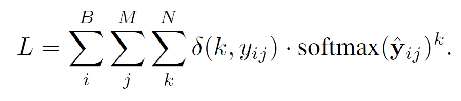
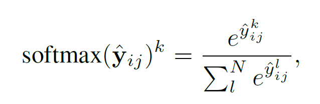
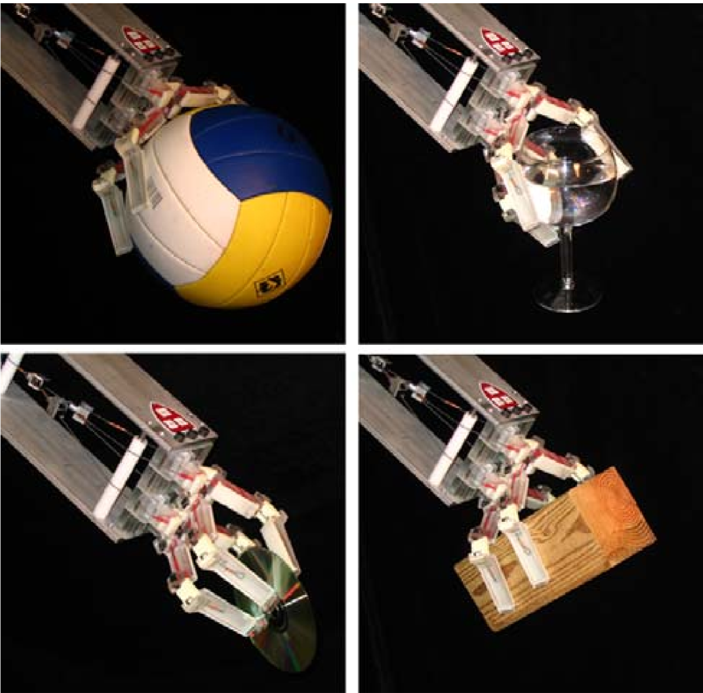
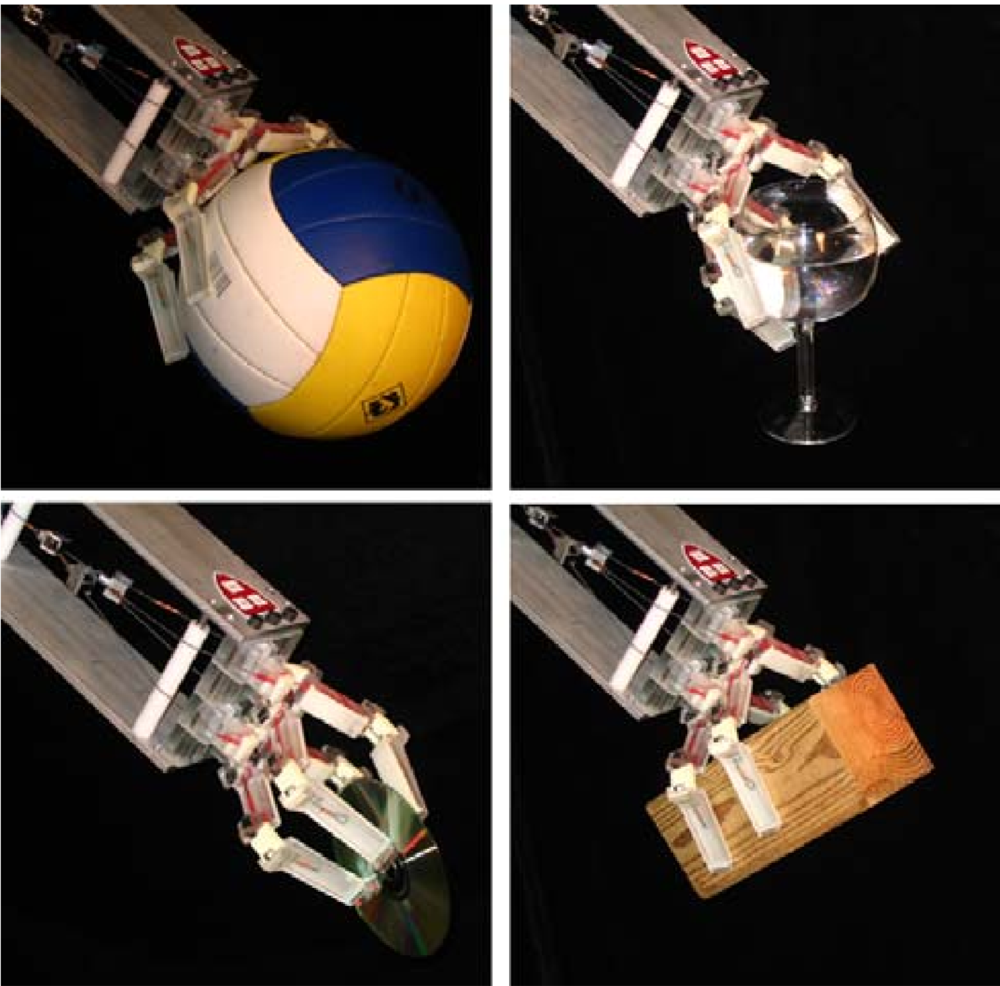

Grasping Robots
Grasping
Grasping objects is an important home robotics problem with many vital applications. Knowing the right position and technique to hold an object is crucial in robots that incorporate elements of picking things up or manipulating an object, be it a robot that opens doors, picks things out of a bag, or even one that folds your clothes.
The grasping problem is still a difficult problem for robots. Humans may have had years of practice interacting with their surroundings to fine-tune their motor skills, but robots will not have had this experience. Dealing with the complexity of varying appearance, shape, friction, or even mass in the object, as well as the always-changing environment the object find itself in, makes grasping and interacting with objects a continuous challenge – as opposed to the adaptable and applicable human hand. Machine learning, computer vision, and optimizing the grip functions are therefore vital in helping robots come to grips with complex new objects and surroundings.
Machine Learning in Grasping Robots
Deep learning is fundamental to improving the quality of grasping robots. With a large selection of data, better responses from robots can be trained in a shorter time. This study (1) done by academics at Imperial shows the potency of this technique, where robots were able to utilize deep learning to optimize a function to determine where to grip an object. Google have also had a similar approach in developing their robots (2) – which created a more robust grasp that would take into account minor hardware and camera calibration variations. Using a central neural network, multiple robots are able to work on the same problem, sharing their results and continually building off these results. This also allows autonomy within the development of the robot’s grasping, eliminating the need for hand-engineered solutions and instead allowing the robot to adapt and grow their knowledge.
Learning this grasp function within the neural network was done by minimizing the loss function,
which maps events onto a real number:


The indicator function (delta) is equal to 1 if and only if the two parameter scores are equal -
otherwise it is equal to 0. The softmax function is the standard for neural network classification
because only the relative values of scores are important. (1)
These solutions require an abundance of training data; the Google study estimated that changes only began to really come into fruition once 800,000 trials had occurred – over 3000 hours of learning. (2) Creating this data manually is exhausting and difficult, so data is normally generated through a mixture of physics and image simulations. Nevertheless, real-life experiments are also crucial to developing a synthesis in grasping, and this combination gives a wide range of available data to the network.
Computer Vision
To aid the autonomy of grasping, the robot must be able to convert the images it takes in from its camera into computer images, specifying the depth of the object to allow a suitable map to be created. This vision-based approach for learning is generally used in robots to improve their grasping ability, as it is greatly adaptable and the desired grasp position can be calculated from these depth images, utilizing the available learning techniques. (1)
Computing the target pose through image observations calibrates the camera with respect to the robot,
noting the horizontal and vertical translations of the gripper from the centre of the image, as well
as the rotation of the gripper about the z-axis of the image. The target pose can be transformed from
these image coordinates to a format in the robot’s frame by the following transformations: (1)

where TRP is the target gripper pose in the robot frame,
TRG is the transformation between the robot frame and the
starting gripper frame (when the image was captured), TGC
is the calibrated transformation between the gripper frame
and the camera frame, and TCI is the transformation between
2D image coordinates and the 3D camera frame.
Optimising Grip
Given the basic strategy of a grasping by looking at the object and selecting where to grab, optimizing the grip pose is important to this process. In the previously mentioned Imperial study (1), the grasp function was optimised to be more robust by introducing uncertainties in the calculation of the grip position, smoothing the grasp function to select regions of high grasp quality rather than just a single point with a high grasp quality. This is done by taking the processed depth image and outputting a grasp function that would predict the quality of each gripper pose if a grasp was attempted there, done by smoothing the grasp function in 3 dimensions with a kernel corresponding to a Gaussian distribution that uses a covariance matrix to represent the uncertainty.
Improving the Hand
In terms of hardware, having a mechanically robust hand is also critical in improving the grasping quality (3). Designing the structure of the hand to include features of compliance and adaptability can eliminate the uncertainties created by traditional, more fragile hands. Being able to passively adapt to large variations in object geometry allow for a much more reliable grasp, as does building the hand to be underactuated – taking advantage of momentum to create a mechanism with more degrees of freedom than actuators controlling its movement. This creates a more fluid and smooth motion, all in all making a robust hand that provides reliable and consistent grip.
 Above: A selection of items used in real-life testing by the grasping robots of the Imperial study.(1)

Above: A four-fingered robust gripper developed at Harvard that uses underactuating as a technique to improve grip quality.(3)
Above: A selection of items used in real-life testing by the grasping robots of the Imperial study.(1)

Above: A four-fingered robust gripper developed at Harvard that uses underactuating as a technique to improve grip quality.(3)